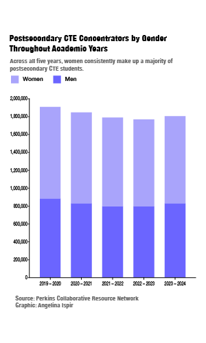
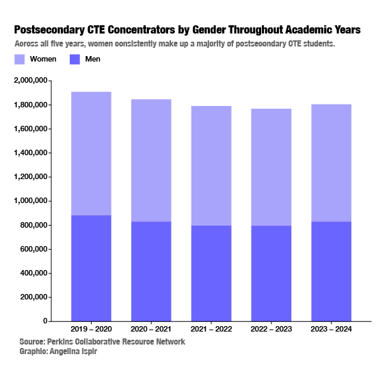
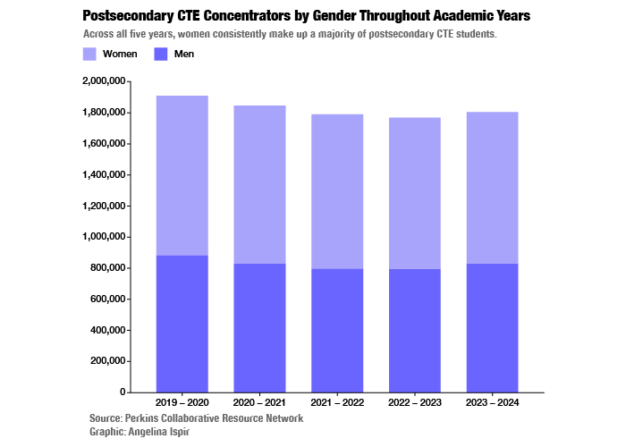
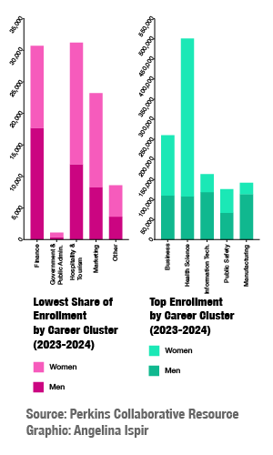
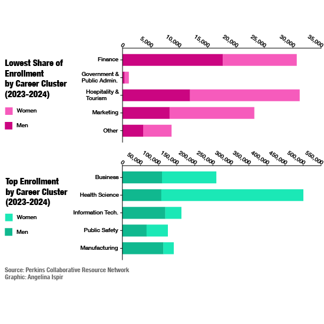
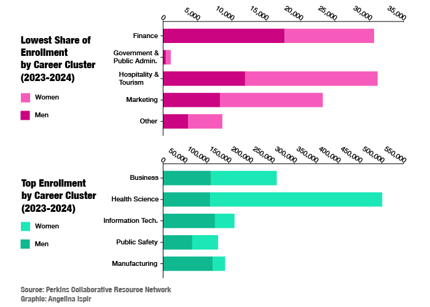

The common narrative is that more men are turning toward trade school. But at the same time, research from the Pew Research Center shows women make up a growing share of high-paying occupations in the United States.
One reason is education patterns. Most professional jobs require at least a bachelor’s degree, andwomen have been outpacing men in college enrollment for years—by roughly 47% since 2024, according to Pew data.
Still, college is not the only path women are taking. Data from the Perkins Collaborative Resource Network shows women also earn a larger share of postsecondary career and technical education (CTE) certifications than men.
  These sub-baccalaureate programs—often offered at community and technical colleges—are organized into 16 career clusters. Women dominate Health Science fields and make up the majority in business-related programs, though they remain underrepresented in STEM and IT.
  Overall, women are participating in postsecondary education at higher rates than men, reshaping traditional gender gaps across career pathways in the U.S.